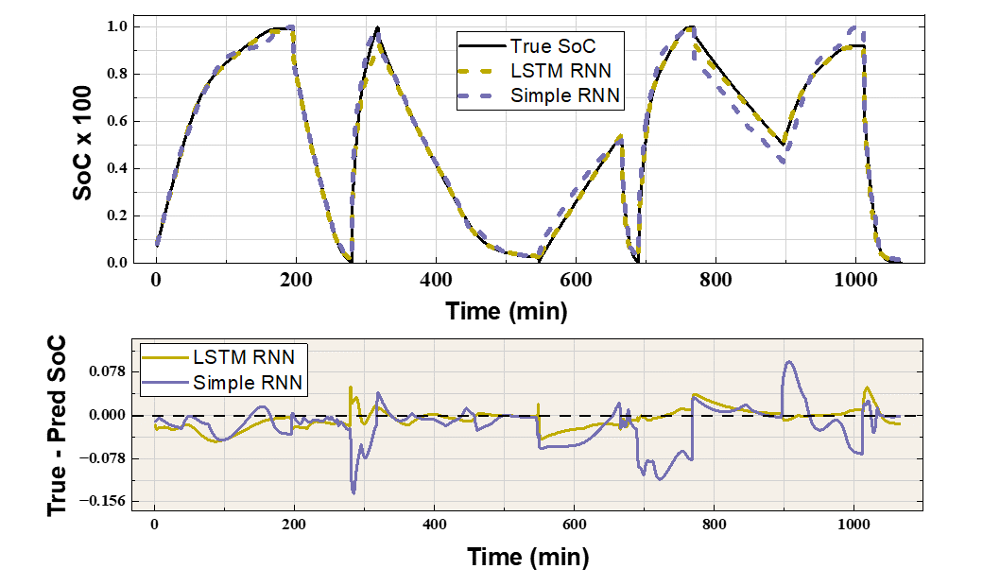

Machine learning based prediction of State of Charge of packed beds
Conference : International Cryogenic Engineering Conference / International Cryogenic Material Conference 2026
Venue : Daejeon, Republic of Korea (South Korea)
Abstract: Accurate estimation of the State of Charge (SoC) of a packed bed cryogenic energy recovery systems (PB-CERS) is essential for intelligent cold energy management. However, limited knowledge on the temperature distribution within the bed during PB-CERS operation makes the theoretical estimation of SoC challenging. This study evaluates and compares four machine learning (ML) models—MLP, XGB, Simple RNN, and LSTM RNN—for SoC prediction in a PB-CERS. To emulate real-time monitoring, the models were trained using measurable operating parameters: inlet mass flow rate, inlet temperature, and outlet temperature. The training and testing datasets were generated using a transient heat transfer model. Among the considered ML models, LSTM and Simple RNN exhibited higher testing R2 (0.993 and 0.982 for LSTM and simple RNN respectively), and showed better generalization capabilities while MLP and XGB models offered lower training times. The superior performance of the RNN models was due to their ability to capture the temporal evolution of the SoC and bed temperature. Overall, these results suggest that ML-based SoC prediction is a promising approach for real-time monitoring of PB-CERS. Further, the selection of an ML model for such an application may involve a trade-off between computational load and prediction performance.

Methodology: The optimization of the layer heights in a cascaded PCM based PB-CERS was performed using a genetic algorithm. The objective function was defined to maximize the bed utilization and second law efficiency. The heat transfer model provided temperature profiles for each layer, which were used to evaluate the performance of different configurations. The genetic algorithm iteratively adjusted the heights of the PCM layers, selecting for configurations that improved the objective function. This process continued until convergence was achieved, resulting in an optimized design for the packed bed system. (Read Publication)